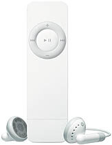

- 1st Generation
- 2nd Generation
- 3rd Generation

1st Generation.
Released on January 11, 2005 during the Macworld expo,
the first-generation iPod Shuffle weighed 0.78 ounces (22 g),
resembled a pack of chewing gum sticks,
and was designed to be easily loaded with a selection of songs and to play them in sequential or random order.
It used the SigmaTel STMP35xx system on a chip (SOC) and its software development kit (SDK) v2.6,
a flash memory IC, and USB rechargeable lithium cell. The STMP35xx SOC and its software was the most fully integrated portable MP3 playback system at release time and SigmaTel was Austin's largest IPO (2003) capturing over 60% of flash based MP3 player world market share in 2004. In 2005, peak iPod first-generation Shuffle production occurred at a hundred thousand units per day, at the Asus factory.